Data Preparation (Persiapan Data CO)#
Data Preparation adalah tahap ketiga dalam metodologi CRISP-DM yang bertujuan untuk membersihkan, mengimputasi nilai kosong (missing values), menangani pencilan (outliers), dan merekayasa fitur (feature engineering) dari deret waktu pengamatan kualitas udara polutan Karbon Monoksida (\(\text{CO}\)) pada skala geografis Tingkat Kecamatan (Kecamatan Bungah) selama 365 hari (24 Agustus 2025 – 23 Agustus 2026).
1. Penanganan Missing Values & Outliers (Data Cleaning Terpadu)#
1.1 Evaluasi Missing Values (Celah Data Mentah)#
Data pengamatan satelit Sentinel-5P dari Copernicus Data Space untuk polutan \(\text{CO}\) harian selama 365 hari memiliki celah data (missing values / NaN) yang disebabkan oleh tutupan awan tebal, kendala jadwal orbit satelit, dan penyaringan validasi kualitas (quality flag).
Evaluasi celah data dihitung secara dinamis menggunakan kode Python berikut:
import pandas as pd
import numpy as np
import matplotlib.pyplot as plt
# 1. Membaca Dataset Mentah CO (365 Hari)
raw_path = '../data/csv/timeseries/CO_gresik_timeseries.csv'
df_raw = pd.read_csv(raw_path)
df_raw['date'] = pd.to_datetime(df_raw['date'])
df_raw = df_raw.sort_values('date').reset_index(drop=True)
# Hitung statistik celah data awal
total_rows = len(df_raw)
nan_awal = df_raw['CO'].isna().sum()
valid_awal = df_raw['CO'].notna().sum()
print(f"Total Baris Observasi : {total_rows} hari")
print(f"Jumlah Data Valid Awal : {valid_awal} hari ({valid_awal/total_rows*100:.2f}%)")
print(f"Jumlah Missing (NaN) : {nan_awal} hari ({nan_awal/total_rows*100:.2f}%)")
Total Baris Observasi : 365 hari
Jumlah Data Valid Awal : 192 hari (52.60%)
Jumlah Missing (NaN) : 173 hari (47.40%)
1.2 Deteksi & Pengosongan Outlier (Metode IQR Dinamis Berbasis Kode)#
Sebelum dilakukan imputasi deret waktu, titik pencilan (outliers) dievaluasi terlebih dahulu pada populasi data valid agar lonjakan ekstrem tidak merusak kemiringan (slope) garis interpolasi.
Metode Interquartile Range (IQR) dihitung secara presisi dengan pustaka Pandas/NumPy:
Eksekusi kode Python untuk menghitung ambang batas IQR dan mengidentifikasi seluruh tanggal pencilan:
# 2. Deteksi Outlier dengan Metode IQR pada Data Valid
q1 = df_raw['CO'].quantile(0.25)
q3 = df_raw['CO'].quantile(0.75)
iqr = q3 - q1
lower_bound = q1 - 1.5 * iqr
upper_bound = q3 + 1.5 * iqr
# Masking Outlier
is_outlier = (df_raw['CO'] < lower_bound) | (df_raw['CO'] > upper_bound)
jumlah_outlier = is_outlier.sum()
print(f"Kuartil 1 (Q1) : {q1:.6f} mol/m²")
print(f"Kuartil 3 (Q3) : {q3:.6f} mol/m²")
print(f"IQR (Q3 - Q1) : {iqr:.6f} mol/m²")
print(f"Batas Bawah (Lower Bound): {lower_bound:.6f} mol/m²")
print(f"Batas Atas (Upper Bound) : {upper_bound:.6f} mol/m²")
print(f"Jumlah Outlier Terdeteksi: {jumlah_outlier} hari")
# Tabel Detail Tanggal & Nilai Outlier Terdeteksi
df_outliers = df_raw[is_outlier][['date', 'CO']].copy()
df_outliers['date'] = df_outliers['date'].dt.strftime('%Y-%m-%d')
print("\nDaftar Tanggal & Nilai Outlier Terdeteksi secara Akurat:")
print(df_outliers.to_string(index=False))
Kuartil 1 (Q1) : 0.026530 mol/m²
Kuartil 3 (Q3) : 0.030774 mol/m²
IQR (Q3 - Q1) : 0.004244 mol/m²
Batas Bawah (Lower Bound): 0.020164 mol/m²
Batas Atas (Upper Bound) : 0.037140 mol/m²
Jumlah Outlier Terdeteksi: 11 hari
Daftar Tanggal & Nilai Outlier Terdeteksi secara Akurat:
date CO
2025-09-14 0.017361
2025-09-24 0.041642
2025-10-08 0.039112
2025-10-09 0.045237
2026-04-05 0.017621
2026-05-05 0.017592
2026-05-12 0.016968
2026-06-13 0.018679
2026-07-15 0.019071
2026-08-10 0.038350
2026-08-14 0.039100
1.2.1 Evaluasi & Perbandingan Deteksi Outlier 5 Metode Machine Learning (PyOD)#
Selain metode statistik tradisional seperti IQR, dilakukan pula evaluasi perbandingan menggunakan 5 metode deteksi outlier berbasis Machine Learning & Probabilitas (PyOD) dengan taksonomi algoritma yang berbeda:
Isolation Forest (
IForest) — Tree-based Isolation: Memisahkan data dengan memotong-motong ruang fitur secara acak.k-Nearest Neighbors (
KNN) — Distance-based: Mengukur rata-rata jarak Euclidean ke \(k\)-tetangga terdekat.Local Outlier Factor (
LOF) — Density-based: Membandingkan kerapatan lokal (local density) suatu titik terhadap tetangganya.COPOD (Copula-Based Outlier Detection) — Probabilistic: Menggunakan teori kopula multivariate untuk menghitung ekor probabilitas tanpa asumsi distribusi.
ECOD (Empirical Cumulative Distribution Functions) — Distribution-based: Menghitung skor outlier berdasarkan ekor fungsi distribusi kumulatif empiris (ECDF).
Eksekusi kode Python berikut memproses ke-4 polutan (\(\text{CH}_4\), \(\text{CO}\), \(\text{NO}_2\), dan \(\text{SO}_2\)) dengan 5 metode Machine Learning terpisah serta menampilkan rincian tanggal pencilan:
from pyod.models.iforest import IForest
from pyod.models.knn import KNN
from pyod.models.lof import LOF
from pyod.models.copod import COPOD
from pyod.models.ecod import ECOD
pollutants = ['CH4', 'CO', 'NO2', 'SO2']
contamination_rate = 0.05
HARI_MAP = {'Monday': 'Senin', 'Tuesday': 'Selasa', 'Wednesday': 'Rabu', 'Thursday': 'Kamis', 'Friday': 'Jumat', 'Saturday': 'Sabtu', 'Sunday': 'Minggu'}
BULAN_MAP = {1: 'Januari', 2: 'Februari', 3: 'Maret', 4: 'April', 5: 'Mei', 6: 'Juni', 7: 'Juli', 8: 'Agustus', 9: 'September', 10: 'Oktober', 11: 'November', 12: 'Desember'}
for pol in pollutants:
file_path = f"../data/csv/timeseries/{pol}_gresik_timeseries.csv"
df_p = pd.read_csv(file_path)
df_p['date'] = pd.to_datetime(df_p['date'])
df_valid_p = df_p.dropna(subset=[pol]).copy()
X_p = df_valid_p[[pol]].values
models_p = {
'Isolation Forest': IForest(contamination=contamination_rate, random_state=42),
'KNN': KNN(contamination=contamination_rate),
'LOF': LOF(contamination=contamination_rate),
'COPOD': COPOD(contamination=contamination_rate),
'ECOD': ECOD(contamination=contamination_rate)
}
print("==========================================================================")
print(f" PERBANDINGAN 5 METODE OUTLIER MACHINE LEARNING — {pol}")
print("==========================================================================")
print(f"Total Data Valid {pol}: {len(df_valid_p)} hari\n")
for name, model in models_p.items():
model.fit(X_p)
df_valid_p[f'outlier_{name}'] = model.labels_
outliers_m = df_valid_p[df_valid_p[f'outlier_{name}'] == 1]
print(f">>> Metode: {name} | Jumlah Outlier Terdeteksi: {len(outliers_m)} hari")
for idx, row in outliers_m.iterrows():
dt = row['date']
hari = HARI_MAP[dt.strftime('%A')]
print(f" • {hari}, {dt.day} {BULAN_MAP[dt.month]} {dt.year} | Nilai {pol}: {row[pol]:.4f}")
print()
==========================================================================
PERBANDINGAN 5 METODE OUTLIER MACHINE LEARNING — CH4
==========================================================================
Total Data Valid CH4: 20 hari
>>> Metode: Isolation Forest | Jumlah Outlier Terdeteksi: 1 hari
• Minggu, 7 Juni 2026 | Nilai CH4: 1821.6421
>>> Metode: KNN | Jumlah Outlier Terdeteksi: 1 hari
• Minggu, 7 Juni 2026 | Nilai CH4: 1821.6421
>>> Metode: LOF | Jumlah Outlier Terdeteksi: 1 hari
• Jumat, 29 Agustus 2025 | Nilai CH4: 1871.7540
>>> Metode: COPOD | Jumlah Outlier Terdeteksi: 1 hari
• Minggu, 7 Juni 2026 | Nilai CH4: 1821.6421
>>> Metode: ECOD | Jumlah Outlier Terdeteksi: 0 hari
==========================================================================
PERBANDINGAN 5 METODE OUTLIER MACHINE LEARNING — CO
==========================================================================
Total Data Valid CO: 192 hari
>>> Metode: Isolation Forest | Jumlah Outlier Terdeteksi: 10 hari
• Minggu, 14 September 2025 | Nilai CO: 0.0174
• Rabu, 24 September 2025 | Nilai CO: 0.0416
• Kamis, 9 Oktober 2025 | Nilai CO: 0.0452
• Minggu, 5 April 2026 | Nilai CO: 0.0176
• Selasa, 5 Mei 2026 | Nilai CO: 0.0176
• Selasa, 12 Mei 2026 | Nilai CO: 0.0170
• Sabtu, 13 Juni 2026 | Nilai CO: 0.0187
• Senin, 29 Juni 2026 | Nilai CO: 0.0214
• Rabu, 15 Juli 2026 | Nilai CO: 0.0191
• Senin, 10 Agustus 2026 | Nilai CO: 0.0384
>>> Metode: KNN | Jumlah Outlier Terdeteksi: 10 hari
• Minggu, 14 September 2025 | Nilai CO: 0.0174
• Rabu, 24 September 2025 | Nilai CO: 0.0416
• Rabu, 8 Oktober 2025 | Nilai CO: 0.0391
• Kamis, 9 Oktober 2025 | Nilai CO: 0.0452
• Selasa, 12 Mei 2026 | Nilai CO: 0.0170
• Sabtu, 13 Juni 2026 | Nilai CO: 0.0187
• Senin, 29 Juni 2026 | Nilai CO: 0.0214
• Rabu, 15 Juli 2026 | Nilai CO: 0.0191
• Senin, 10 Agustus 2026 | Nilai CO: 0.0384
• Jumat, 14 Agustus 2026 | Nilai CO: 0.0391
>>> Metode: LOF | Jumlah Outlier Terdeteksi: 10 hari
• Minggu, 14 September 2025 | Nilai CO: 0.0174
• Rabu, 24 September 2025 | Nilai CO: 0.0416
• Rabu, 8 Oktober 2025 | Nilai CO: 0.0391
• Kamis, 9 Oktober 2025 | Nilai CO: 0.0452
• Minggu, 5 April 2026 | Nilai CO: 0.0176
• Selasa, 5 Mei 2026 | Nilai CO: 0.0176
• Selasa, 12 Mei 2026 | Nilai CO: 0.0170
• Sabtu, 13 Juni 2026 | Nilai CO: 0.0187
• Rabu, 15 Juli 2026 | Nilai CO: 0.0191
• Jumat, 14 Agustus 2026 | Nilai CO: 0.0391
>>> Metode: COPOD | Jumlah Outlier Terdeteksi: 10 hari
• Rabu, 24 September 2025 | Nilai CO: 0.0416
• Jumat, 3 Oktober 2025 | Nilai CO: 0.0351
• Rabu, 8 Oktober 2025 | Nilai CO: 0.0391
• Kamis, 9 Oktober 2025 | Nilai CO: 0.0452
• Jumat, 10 Oktober 2025 | Nilai CO: 0.0361
• Minggu, 1 Februari 2026 | Nilai CO: 0.0359
• Senin, 9 Maret 2026 | Nilai CO: 0.0355
• Rabu, 22 Juli 2026 | Nilai CO: 0.0367
• Senin, 10 Agustus 2026 | Nilai CO: 0.0384
• Jumat, 14 Agustus 2026 | Nilai CO: 0.0391
>>> Metode: ECOD | Jumlah Outlier Terdeteksi: 10 hari
• Minggu, 14 September 2025 | Nilai CO: 0.0174
• Rabu, 24 September 2025 | Nilai CO: 0.0416
• Rabu, 8 Oktober 2025 | Nilai CO: 0.0391
• Kamis, 9 Oktober 2025 | Nilai CO: 0.0452
• Minggu, 5 April 2026 | Nilai CO: 0.0176
• Selasa, 5 Mei 2026 | Nilai CO: 0.0176
• Selasa, 12 Mei 2026 | Nilai CO: 0.0170
• Sabtu, 13 Juni 2026 | Nilai CO: 0.0187
• Senin, 10 Agustus 2026 | Nilai CO: 0.0384
• Jumat, 14 Agustus 2026 | Nilai CO: 0.0391
==========================================================================
PERBANDINGAN 5 METODE OUTLIER MACHINE LEARNING — NO2
==========================================================================
Total Data Valid NO2: 200 hari
>>> Metode: Isolation Forest | Jumlah Outlier Terdeteksi: 10 hari
• Rabu, 24 September 2025 | Nilai NO2: 0.0003
• Minggu, 28 September 2025 | Nilai NO2: -0.0000
• Kamis, 9 Oktober 2025 | Nilai NO2: 0.0001
• Rabu, 17 Desember 2025 | Nilai NO2: 0.0000
• Senin, 20 April 2026 | Nilai NO2: 0.0002
• Jumat, 29 Mei 2026 | Nilai NO2: 0.0002
• Selasa, 2 Juni 2026 | Nilai NO2: 0.0002
• Senin, 8 Juni 2026 | Nilai NO2: 0.0002
• Kamis, 18 Juni 2026 | Nilai NO2: 0.0001
• Selasa, 30 Juni 2026 | Nilai NO2: 0.0001
>>> Metode: KNN | Jumlah Outlier Terdeteksi: 10 hari
• Senin, 25 Agustus 2025 | Nilai NO2: 0.0001
• Rabu, 24 September 2025 | Nilai NO2: 0.0003
• Kamis, 9 Oktober 2025 | Nilai NO2: 0.0001
• Senin, 20 April 2026 | Nilai NO2: 0.0002
• Jumat, 29 Mei 2026 | Nilai NO2: 0.0002
• Selasa, 2 Juni 2026 | Nilai NO2: 0.0002
• Senin, 8 Juni 2026 | Nilai NO2: 0.0002
• Selasa, 9 Juni 2026 | Nilai NO2: 0.0001
• Kamis, 18 Juni 2026 | Nilai NO2: 0.0001
• Selasa, 30 Juni 2026 | Nilai NO2: 0.0001
>>> Metode: LOF | Jumlah Outlier Terdeteksi: 10 hari
• Senin, 25 Agustus 2025 | Nilai NO2: 0.0001
• Rabu, 24 September 2025 | Nilai NO2: 0.0003
• Minggu, 28 September 2025 | Nilai NO2: -0.0000
• Kamis, 9 Oktober 2025 | Nilai NO2: 0.0001
• Rabu, 17 Desember 2025 | Nilai NO2: 0.0000
• Senin, 20 April 2026 | Nilai NO2: 0.0002
• Jumat, 29 Mei 2026 | Nilai NO2: 0.0002
• Selasa, 2 Juni 2026 | Nilai NO2: 0.0002
• Senin, 8 Juni 2026 | Nilai NO2: 0.0002
• Kamis, 11 Juni 2026 | Nilai NO2: 0.0001
>>> Metode: COPOD | Jumlah Outlier Terdeteksi: 10 hari
• Senin, 25 Agustus 2025 | Nilai NO2: 0.0001
• Rabu, 24 September 2025 | Nilai NO2: 0.0003
• Kamis, 9 Oktober 2025 | Nilai NO2: 0.0001
• Senin, 20 April 2026 | Nilai NO2: 0.0002
• Jumat, 29 Mei 2026 | Nilai NO2: 0.0002
• Selasa, 2 Juni 2026 | Nilai NO2: 0.0002
• Rabu, 3 Juni 2026 | Nilai NO2: 0.0001
• Senin, 8 Juni 2026 | Nilai NO2: 0.0002
• Kamis, 11 Juni 2026 | Nilai NO2: 0.0001
• Minggu, 28 Juni 2026 | Nilai NO2: 0.0001
>>> Metode: ECOD | Jumlah Outlier Terdeteksi: 10 hari
• Rabu, 24 September 2025 | Nilai NO2: 0.0003
• Minggu, 28 September 2025 | Nilai NO2: -0.0000
• Rabu, 17 Desember 2025 | Nilai NO2: 0.0000
• Jumat, 30 Januari 2026 | Nilai NO2: 0.0000
• Jumat, 13 Maret 2026 | Nilai NO2: 0.0000
• Senin, 20 April 2026 | Nilai NO2: 0.0002
• Kamis, 23 April 2026 | Nilai NO2: 0.0000
• Jumat, 29 Mei 2026 | Nilai NO2: 0.0002
• Selasa, 2 Juni 2026 | Nilai NO2: 0.0002
• Senin, 8 Juni 2026 | Nilai NO2: 0.0002
==========================================================================
PERBANDINGAN 5 METODE OUTLIER MACHINE LEARNING — SO2
==========================================================================
Total Data Valid SO2: 235 hari
>>> Metode: Isolation Forest | Jumlah Outlier Terdeteksi: 12 hari
• Selasa, 26 Agustus 2025 | Nilai SO2: 0.0014
• Minggu, 31 Agustus 2025 | Nilai SO2: -0.0006
• Senin, 1 September 2025 | Nilai SO2: -0.0004
• Sabtu, 27 September 2025 | Nilai SO2: 0.0006
• Sabtu, 18 Oktober 2025 | Nilai SO2: -0.0005
• Selasa, 28 Oktober 2025 | Nilai SO2: -0.0005
• Senin, 29 Desember 2025 | Nilai SO2: 0.0006
• Jumat, 27 Maret 2026 | Nilai SO2: -0.0005
• Rabu, 6 Mei 2026 | Nilai SO2: 0.0004
• Rabu, 10 Juni 2026 | Nilai SO2: 0.0007
• Jumat, 26 Juni 2026 | Nilai SO2: -0.0003
• Kamis, 13 Agustus 2026 | Nilai SO2: -0.0007
>>> Metode: KNN | Jumlah Outlier Terdeteksi: 12 hari
• Selasa, 26 Agustus 2025 | Nilai SO2: 0.0014
• Minggu, 31 Agustus 2025 | Nilai SO2: -0.0006
• Senin, 1 September 2025 | Nilai SO2: -0.0004
• Sabtu, 18 Oktober 2025 | Nilai SO2: -0.0005
• Selasa, 28 Oktober 2025 | Nilai SO2: -0.0005
• Senin, 29 Desember 2025 | Nilai SO2: 0.0006
• Jumat, 27 Maret 2026 | Nilai SO2: -0.0005
• Rabu, 6 Mei 2026 | Nilai SO2: 0.0004
• Senin, 18 Mei 2026 | Nilai SO2: 0.0005
• Rabu, 10 Juni 2026 | Nilai SO2: 0.0007
• Jumat, 26 Juni 2026 | Nilai SO2: -0.0003
• Kamis, 13 Agustus 2026 | Nilai SO2: -0.0007
>>> Metode: LOF | Jumlah Outlier Terdeteksi: 12 hari
• Selasa, 26 Agustus 2025 | Nilai SO2: 0.0014
• Minggu, 31 Agustus 2025 | Nilai SO2: -0.0006
• Senin, 1 September 2025 | Nilai SO2: -0.0004
• Senin, 29 September 2025 | Nilai SO2: -0.0003
• Sabtu, 18 Oktober 2025 | Nilai SO2: -0.0005
• Selasa, 28 Oktober 2025 | Nilai SO2: -0.0005
• Sabtu, 6 Desember 2025 | Nilai SO2: -0.0003
• Jumat, 27 Maret 2026 | Nilai SO2: -0.0005
• Kamis, 23 April 2026 | Nilai SO2: -0.0003
• Rabu, 10 Juni 2026 | Nilai SO2: 0.0007
• Jumat, 26 Juni 2026 | Nilai SO2: -0.0003
• Kamis, 13 Agustus 2026 | Nilai SO2: -0.0007
>>> Metode: COPOD | Jumlah Outlier Terdeteksi: 12 hari
• Senin, 25 Agustus 2025 | Nilai SO2: 0.0006
• Selasa, 26 Agustus 2025 | Nilai SO2: 0.0014
• Kamis, 11 September 2025 | Nilai SO2: 0.0005
• Sabtu, 27 September 2025 | Nilai SO2: 0.0006
• Rabu, 19 November 2025 | Nilai SO2: 0.0006
• Senin, 29 Desember 2025 | Nilai SO2: 0.0006
• Minggu, 29 Maret 2026 | Nilai SO2: 0.0005
• Selasa, 7 April 2026 | Nilai SO2: 0.0006
• Sabtu, 9 Mei 2026 | Nilai SO2: 0.0006
• Minggu, 7 Juni 2026 | Nilai SO2: 0.0006
• Rabu, 10 Juni 2026 | Nilai SO2: 0.0007
• Minggu, 2 Agustus 2026 | Nilai SO2: 0.0005
>>> Metode: ECOD | Jumlah Outlier Terdeteksi: 12 hari
• Senin, 25 Agustus 2025 | Nilai SO2: 0.0006
• Selasa, 26 Agustus 2025 | Nilai SO2: 0.0014
• Minggu, 31 Agustus 2025 | Nilai SO2: -0.0006
• Senin, 1 September 2025 | Nilai SO2: -0.0004
• Sabtu, 27 September 2025 | Nilai SO2: 0.0006
• Sabtu, 18 Oktober 2025 | Nilai SO2: -0.0005
• Selasa, 28 Oktober 2025 | Nilai SO2: -0.0005
• Senin, 29 Desember 2025 | Nilai SO2: 0.0006
• Jumat, 27 Maret 2026 | Nilai SO2: -0.0005
• Selasa, 7 April 2026 | Nilai SO2: 0.0006
• Rabu, 10 Juni 2026 | Nilai SO2: 0.0007
• Kamis, 13 Agustus 2026 | Nilai SO2: -0.0007
Visualisasi perbandingan hasil deteksi 5 metode untuk setiap polutan dalam bentuk subplot:
# Visualisasi Subplot 5 Metode Outlier untuk Setiap Polutan
for pol in pollutants:
file_path = f"../data/csv/timeseries/{pol}_gresik_timeseries.csv"
df_p = pd.read_csv(file_path)
df_p['date'] = pd.to_datetime(df_p['date'])
df_valid_p = df_p.dropna(subset=[pol]).copy()
X_p = df_valid_p[[pol]].values
models_p = {
'Isolation Forest': IForest(contamination=contamination_rate, random_state=42),
'KNN': KNN(contamination=contamination_rate),
'LOF': LOF(contamination=contamination_rate),
'COPOD': COPOD(contamination=contamination_rate),
'ECOD': ECOD(contamination=contamination_rate)
}
fig, axes = plt.subplots(5, 1, figsize=(12, 10), sharex=True, dpi=120)
for i, (name, model) in enumerate(models_p.items()):
model.fit(X_p)
labels = model.labels_
normal_m = df_valid_p[labels == 0]
outliers_m = df_valid_p[labels == 1]
ax = axes[i]
ax.plot(df_valid_p['date'], df_valid_p[pol], color='#bdc3c7', linewidth=0.8, alpha=0.6)
ax.scatter(normal_m['date'], normal_m[pol], color='#2980b9', s=18, alpha=0.7, label='Normal')
ax.scatter(outliers_m['date'], outliers_m[pol], color='#e74c3c', s=40, edgecolors='black', label=f'Outlier ({len(outliers_m)})')
ax.set_title(f'Deteksi Outlier {pol} — Metode: {name}', fontsize=9, fontweight='bold')
ax.set_ylabel(pol, fontsize=8)
ax.legend(loc='upper right', fontsize=8)
ax.grid(True, linestyle=':', alpha=0.5)
plt.xlabel('Tanggal Observasi (24 Aug 2025 - 23 Aug 2026)', fontsize=9)
plt.suptitle(f'Grafik Deteksi Outlier 5 Metode — Polutan {pol}', fontsize=12, fontweight='bold', y=1.01)
plt.tight_layout()
plt.show()
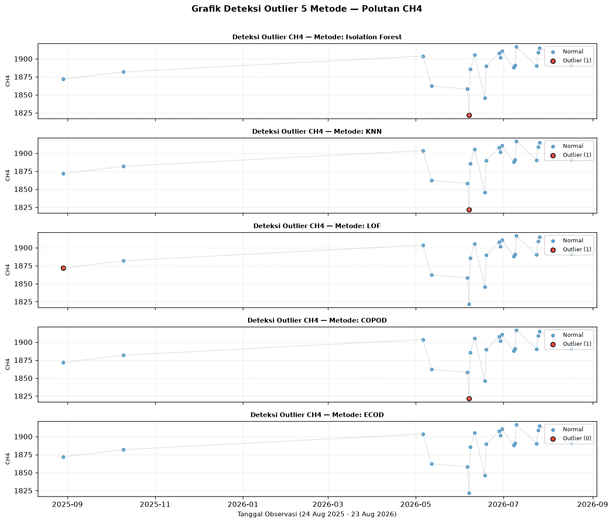
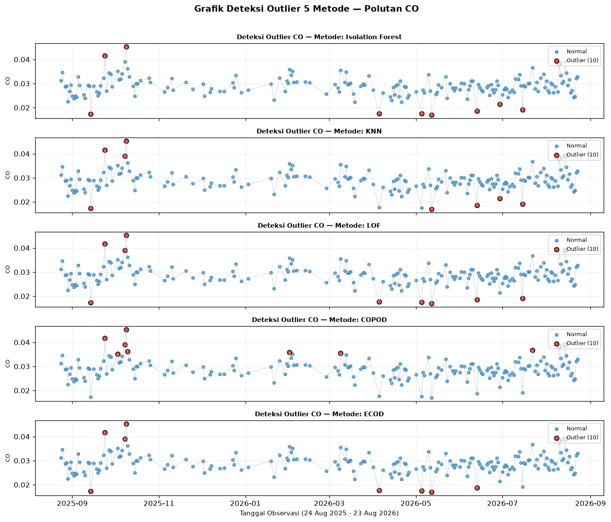
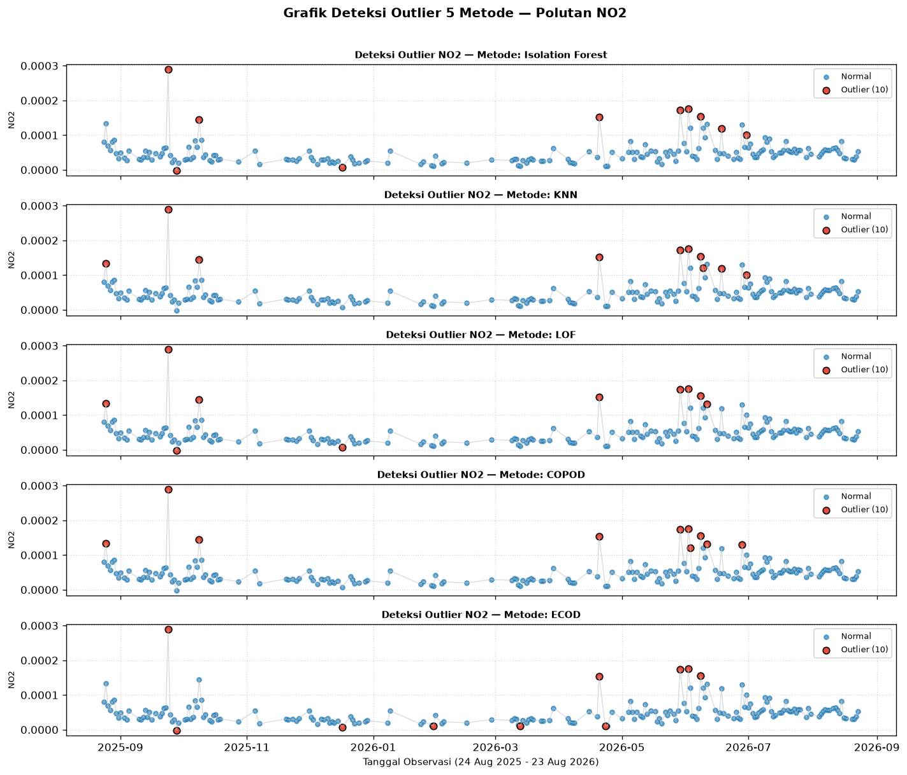
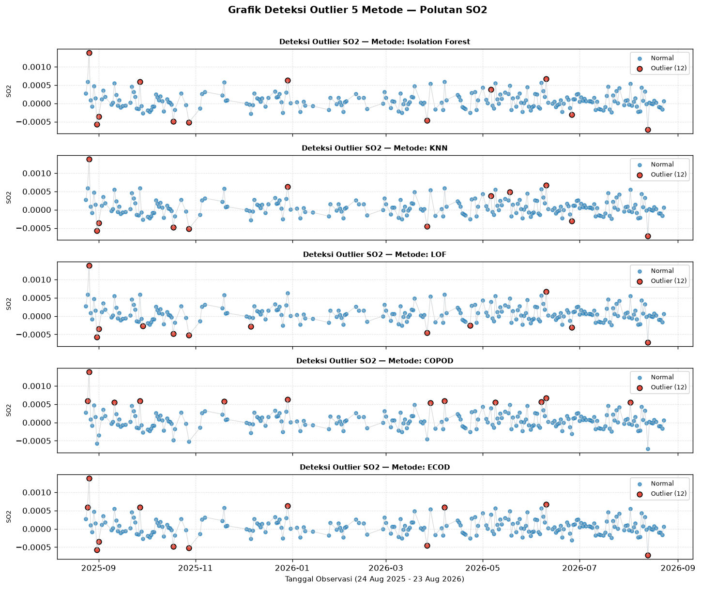
1.3 Pengosongan Outlier & Imputasi Linear Time Interpolation#
Titik data pencilan diubah menjadi NaN lalu diimputasi bersama dengan celah data mentah menggunakan Linear Time Interpolation:
# 3. Pengosongan Nilai Outlier menjadi NaN
df_prep = df_raw.copy()
df_prep.loc[is_outlier, 'CO'] = np.nan
nan_setelah_outlier = df_prep['CO'].isna().sum()
# 4. Imputasi Linear Time Interpolation Sekaligus
df_clean = df_prep.copy()
df_clean['CO_clean'] = df_clean['CO'].interpolate(method='linear', limit_direction='both')
nan_akhir = df_clean['CO_clean'].isna().sum()
print(f"Jumlah NaN Setelah Outlier Dikosongkan : {nan_setelah_outlier} hari ({nan_setelah_outlier/total_rows*100:.2f}%)")
print(f"Jumlah NaN Setelah Imputasi Akhir : {nan_akhir} hari (100% Terisi & Clean)")
# Simpan dataset bersih ke file CSV
df_save = df_clean[['date', 'CO_clean']].rename(columns={'CO_clean': 'CO'})
df_save.to_csv('../data/csv/clean/CO_clean.csv', index=False)
print("Dataset bersih disimpan ke '../data/csv/clean/CO_clean.csv'")
Jumlah NaN Setelah Outlier Dikosongkan : 184 hari (50.41%)
Jumlah NaN Setelah Imputasi Akhir : 0 hari (100% Terisi & Clean)
Dataset bersih disimpan ke '../data/csv/clean/CO_clean.csv'
1.4 Visualisasi 4 Grafik Terpisah & Ringkasan Perubahan Status Sinyal#
Untuk menjaga kejelasan visual tanpa menumpuk warna dalam satu grafik, alur pembersihan sinyal disajikan dalam 4 grafik terpisah:
# Set Visual Style
plt.style.use('seaborn-v0_8-whitegrid' if 'seaborn-v0_8-whitegrid' in plt.style.available else 'default')
# Grafik 1: Missing Values (Data Mentah dengan Celah Kosong / NaN)
fig, ax = plt.subplots(figsize=(12, 4), dpi=150)
ax.plot(df_raw['date'], df_raw['CO'], color='#2c3e50', linewidth=1.2, label='Sinyal Valid Mentah (192 Hari)')
ax.set_title('1. Sinyal CO Mentah dengan Celah Missing Values (173 Hari Kosong / NaN)', fontsize=11, fontweight='bold', pad=10)
ax.set_xlabel('Tanggal Observasi (24 Aug 2025 - 23 Aug 2026)', fontsize=10)
ax.set_ylabel('Konsentrasi CO (mol/m²)', fontsize=10)
ax.legend(loc='upper right', frameon=True)
ax.grid(True, linestyle=':', alpha=0.6)
plt.tight_layout()
plt.show()
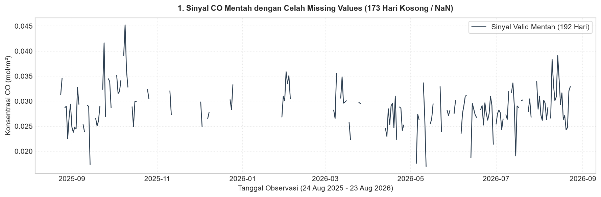
# Grafik 2: Sinyal Setelah Missing Values Diimputasi (Sebelum Cleaning Outlier)
df_raw_imputed = df_raw.copy()
df_raw_imputed['CO_imputed'] = df_raw_imputed['CO'].interpolate(method='linear', limit_direction='both')
fig, ax = plt.subplots(figsize=(12, 4), dpi=150)
ax.plot(df_raw_imputed['date'], df_raw_imputed['CO_imputed'], color='#2980b9', linewidth=1.2, label='Sinyal Terisi Utuh (365 Hari)')
ax.set_title('2. Sinyal CO Setelah Imputasi Missing Values (Linear Time Interpolation)', fontsize=11, fontweight='bold', pad=10)
ax.set_xlabel('Tanggal Observasi (24 Aug 2025 - 23 Aug 2026)', fontsize=10)
ax.set_ylabel('Konsentrasi CO (mol/m²)', fontsize=10)
ax.legend(loc='upper right', frameon=True)
ax.grid(True, linestyle=':', alpha=0.6)
plt.tight_layout()
plt.show()
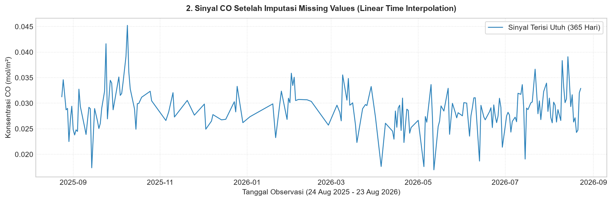
# Grafik 3: Deteksi Outlier Menggunakan Metode IQR
outliers_plot = df_raw[is_outlier]
fig, ax = plt.subplots(figsize=(12, 4.5), dpi=150)
ax.plot(df_raw['date'], df_raw['CO'], color='#7f8c8d', linewidth=1.0, alpha=0.7, label='Sinyal Valid Mentah')
ax.scatter(outliers_plot['date'], outliers_plot['CO'], color='#e74c3c', s=45, zorder=5, marker='o', edgecolor='black', linewidth=0.8, label=f'Outlier Terdeteksi ({len(outliers_plot)} Hari)')
ax.axhline(upper_bound, color='#c0392b', linestyle='--', linewidth=1.2, label=f'Batas Atas / Upper Bound ({upper_bound:.5f})')
ax.axhline(lower_bound, color='#2980b9', linestyle='--', linewidth=1.2, label=f'Batas Bawah / Lower Bound ({lower_bound:.5f})')
ax.set_title(f'3. Deteksi 11 Outlier CO Menggunakan Metode Interquartile Range (IQR)', fontsize=11, fontweight='bold', pad=10)
ax.set_xlabel('Tanggal Observasi (24 Aug 2025 - 23 Aug 2026)', fontsize=10)
ax.set_ylabel('Konsentrasi CO (mol/m²)', fontsize=10)
ax.legend(loc='upper right', frameon=True, fontsize=9)
ax.grid(True, linestyle=':', alpha=0.6)
plt.tight_layout()
plt.show()
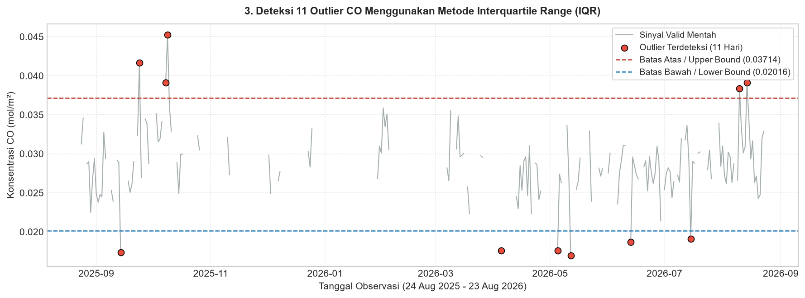
# Grafik 4: Sinyal CO Final Setelah Outlier Dibersihkan & Diimputasi
fig, ax = plt.subplots(figsize=(12, 4), dpi=150)
ax.plot(df_clean['date'], df_clean['CO_clean'], color='#27ae60', linewidth=1.4, label='Sinyal Mulus Super Clean (365 Hari)')
ax.set_title('4. Sinyal CO Final Setelah Penanganan Outlier & Imputasi Linear (Clean Dataset)', fontsize=11, fontweight='bold', pad=10)
ax.set_xlabel('Tanggal Observasi (24 Aug 2025 - 23 Aug 2026)', fontsize=10)
ax.set_ylabel('Konsentrasi CO (mol/m²)', fontsize=10)
ax.legend(loc='upper right', frameon=True)
ax.grid(True, linestyle=':', alpha=0.6)
plt.tight_layout()
plt.show()
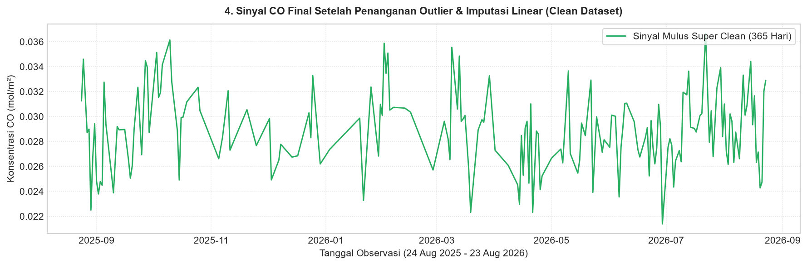
Tabel Ringkasan Perubahan Status Sinyal#
Tahapan Data Preparation |
Jumlah Data Valid |
Jumlah Missing Values ( |
Jumlah Outliers |
Keterangan Status |
|---|---|---|---|---|
1. Data Mentah (Raw) |
192 hari |
173 hari (47.40%) |
11 hari |
Ada celah |
2. Pengosongan Outlier |
181 hari |
184 hari (50.41%) |
0 hari |
Outlier diubah menjadi |
3. Imputasi Akhir (Clean) |
365 hari |
0 hari (0.00%) |
0 hari |
Sinyal mulus 100% utuh |
{kind=link}
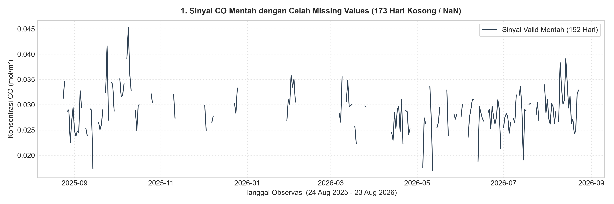
Fig. 7 Grafik 1: Sinyal CO Mentah dengan Celah Missing Values (173 Hari Kosong / NaN)#
{kind=link}
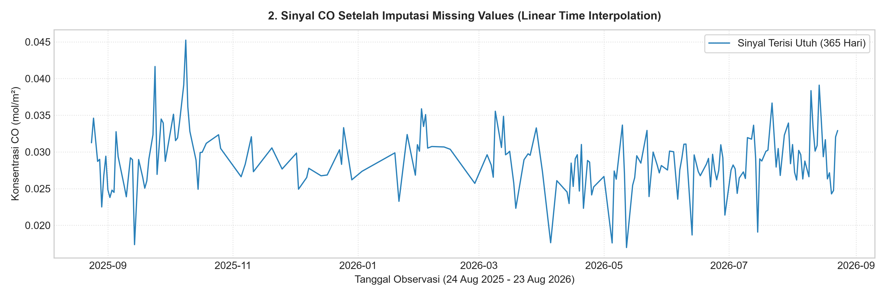
Fig. 8 Grafik 2: Sinyal CO Setelah Imputasi Missing Values (Linear Time Interpolation)#
{kind=link}
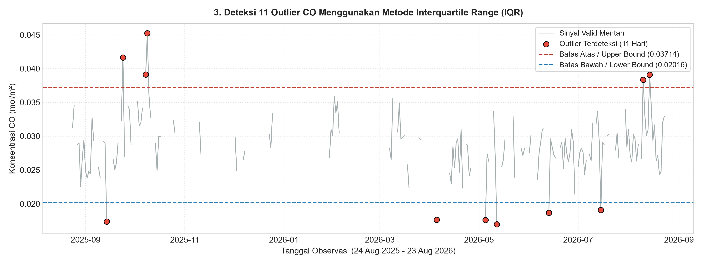
Fig. 9 Grafik 3: Deteksi 11 Outlier CO Menggunakan Metode Interquartile Range (IQR)#
{kind=link}
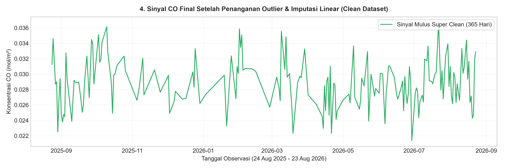
Fig. 10 Grafik 4: Sinyal CO Final Setelah Penanganan Outlier & Imputasi Linear (Clean Dataset)#
2. Ekstraksi Fitur TSFEL (Time Series Feature Extraction Library)#
2.1 Konsep Rekayasa Fitur Time Series#
Untuk merepresentasikan karakteristik dinamika sinyal konsentrasi \(\text{CO}\) selama 365 hari dalam bentuk vektor numerik yang siap diproses oleh algoritma Machine Learning dan analisis kemiripan (similarity analysis), digunakan pustaka TSFEL (Time Series Feature Extraction Library) mengacu pada dokumentasi resmi TSFEL Feature List Documentation.
Sesuai dengan daftar resmi 68 fitur TSFEL (FEATURE_LIST), ekstraksi fitur dikelompokkan ke dalam 4 domain utama:
Domain Statistik: Mengukur pemusatan, sebaran, kemiringan, ECDF, dan distribusi probabilitas sinyal.
Domain Temporal: Mengukur sifat linier, autokorelasi, perlintasan nol, dan durasi fluktuasi dalam domain waktu.
Domain Spektral: Mengukur distribusi energi spektrogram, MFCC, LPCC, Wavelet, dan frekuensi sinyal (FFT).
Domain Fraktal: Menganalisis ketidakteraturan, kompleksitas self-similarity (DFA, Hurst Exponent, Higuchi, Petrosian, MSE).
Output File CSV: Matriks presisi 68 fitur TSFEL disimpan ke
data/csv/features/CO_tsfel_features.csvdengan format headerf1_abs_energyhinggaf68_zero_cross.
3. Katalog & Penomoran Presisi 68 Fitur TSFEL (\(f_1\) hingga \(f_{68}\))#
Berikut adalah penjelasan detail komprehensif untuk seluruh 68 fitur TSFEL yang diekstrak, mencakup konsep fitur, alasan penggunaan pada sinyal CO, rumus matematis LaTeX, dan interpretasi hasil yang dikelompokkan ke dalam 4 domain utama:
3.1 Domain Statistik (Statistical Domain) (22 Fitur)#
f1: f1_abs_energy#
Apa sebenarnya fitur ini?: Akumulasi total energi mutlak sinyal CO.
Kenapa fitur ini digunakan?: Mengukur magnitudo keseluruhan akumulasi pencemaran CO selama kurun waktu pengamatan.
Rumus Matematis LaTeX: \(E = \sum_{i=1}^{N} x_i^2\)
Interpretasi Hasil: Nilai energi tinggi menunjukkan durasi konsentrasi CO tinggi yang berkelanjutan.
f4: f4_average_power#
Apa sebenarnya fitur ini?: Rata-rata daya kuadrat sinyal per satuan waktu harian.
Kenapa fitur ini digunakan?: Memberikan gambaran intensitas daya emisi polusi harian rata-rata tanpa terpengaruh jumlah hari.
Rumus Matematis LaTeX: \(P = \frac{1}{N} \sum_{i=1}^{N} x_i^2\)
Interpretasi Hasil: Indikator tingkat beban emisi rata-rata harian di Kecamatan Bungah.
f6: f6_calc_max#
Apa sebenarnya fitur ini?: Nilai konsentrasi CO tertinggi yang tercatat dalam 365 hari.
Kenapa fitur ini digunakan?: Menandai puncak ekstrem krisis kualitas udara tertinggi.
Rumus Matematis LaTeX: \(x_{\max} = \max(x_1, x_2, \dots, x_N)\)
Interpretasi Hasil: Menjadi batas atas paparan bahaya pencemaran CO.
f7: f7_calc_mean#
Apa sebenarnya fitur ini?: Rata-rata aritmatika konsentrasi CO harian.
Kenapa fitur ini digunakan?: Baseline standar polusi udara tahunan wilayah pengamatan.
Rumus Matematis LaTeX: \(\bar{x} = \frac{1}{N} \sum_{i=1}^{N} x_i\)
Interpretasi Hasil: Menggambarkan kualitas udara rata-rata sehari-hari.
f8: f8_calc_median#
Apa sebenarnya fitur ini?: Nilai tengah distribusi konsentrasi CO.
Kenapa fitur ini digunakan?: Tahan terhadap pencilan lonjakan singkat emisi industri.
Rumus Matematis LaTeX: \(\tilde{x} = \text{median}(x_1, x_2, \dots, x_N)\)
Interpretasi Hasil: Representasi posisi tengah data yang robus dari skewness.
f9: f9_calc_min#
Apa sebenarnya fitur ini?: Nilai konsentrasi CO terendah dalam 365 hari.
Kenapa fitur ini digunakan?: Menunjukkan kualitas udara paling bersih/baseline latar belakang alami.
Rumus Matematis LaTeX: \(x_{\min} = \min(x_1, x_2, \dots, x_N)\)
Interpretasi Hasil: Ambang minimum polusi lingkungan.
f10: f10_calc_std#
Apa sebenarnya fitur ini?: Standar deviasi penyebaran nilai CO dari rata-rata.
Kenapa fitur ini digunakan?: Mengukur tingkat variabilitas dan gejolak kestabilan polusi harian.
Rumus Matematis LaTeX: \(s = \sqrt{\frac{1}{N-1}\sum_{i=1}^{N} (x_i - \bar{x})^2}\)
Interpretasi Hasil: Semakin tinggi std, semakin tidak stabil kualitas udara.
f11: f11_calc_var#
Apa sebenarnya fitur ini?: Variansi atau kuadrat penyebaran data CO.
Kenapa fitur ini digunakan?: Memberikan bobot lebih besar pada variasi fluktuasi emisi ekstrem.
Rumus Matematis LaTeX: \(s^2 = \frac{1}{N-1}\sum_{i=1}^{N} (x_i - \bar{x})^2\)
Interpretasi Hasil: Ukuran dispersi kuadratik populasi sinyal.
f14: f14_ecdf#
Apa sebenarnya fitur ini?: Fungsi Distribusi Kumulatif Empiris sinyal CO.
Kenapa fitur ini digunakan?: Menjelaskan proporsi kumulatif hari yang berada di bawah ambang tertentu.
Rumus Matematis LaTeX: \(F(x) = \frac{1}{N} \sum_{i=1}^{N} \mathbb{I}(x_i \le x)\)
Interpretasi Hasil: Vektor sebaran probabilitas kumulatif.
f15: f15_ecdf_percentile#
Apa sebenarnya fitur ini?: Nilai kuantil persentil spesifik dari ECDF.
Kenapa fitur ini digunakan?: Menentukan batas persentil polusi (misal persentil ke-50 atau ke-90).
Rumus Matematis LaTeX: \(Q_p = \inf \{x : F(x) \ge p\}\)
Interpretasi Hasil: Ambang batas konsentrasi CO pada persentil tertentu.
f16: f16_ecdf_percentile_count#
Apa sebenarnya fitur ini?: Jumlah hari yang konsentrasinya di bawah persentil ECDF.
Kenapa fitur ini digunakan?: Menghitung frekuensi hari dengan kategori kualitas udara tertentu.
Rumus Matematis LaTeX: \(N_p = \sum_{i=1}^{N} \mathbb{I}(x_i \le Q_p)\)
Interpretasi Hasil: Jumlah akumulasi sampel hari.
f17: f17_ecdf_slope#
Apa sebenarnya fitur ini?: Kemiringan kenaikan kumulatif ECDF antara dua persentil.
Kenapa fitur ini digunakan?: Mengukur kerapatan sebaran data pada interval konsentrasi tertentu.
Rumus Matematis LaTeX: \(\text{Slope}_{\text{ECDF}} = \frac{F(p_2) - F(p_1)}{x_{p2} - x_{p1}}\)
Interpretasi Hasil: Menunjukkan seberapa cepat akumulasi probabilitas naik.
f18: f18_entropy#
Apa sebenarnya fitur ini?: Entropi Shannon dari distribusi amplitudo sinyal.
Kenapa fitur ini digunakan?: Mengukur tingkat ketidakpastian / ketidakacakan distribusi konsentrasi CO.
Rumus Matematis LaTeX: \(H(x) = -\sum_{i=1}^{K} p(x_i) \log_2 p(x_i)\)
Interpretasi Hasil: Entropi tinggi berarti distribusi konsentrasi sangat acak dan tersebar.
f21: f21_hist_mode#
Apa sebenarnya fitur ini?: Nilai modus (nilai paling sering muncul) pada histogram CO.
Kenapa fitur ini digunakan?: Mengetahui tingkat konsentrasi CO yang paling dominan dirasakan sehari-hari.
Rumus Matematis LaTeX: \(\text{Mode}(x) = \arg\max_b \text{count}(b)\)
Interpretasi Hasil: Titik kerapatan puncak populasi sinyal.
f24: f24_interq_range#
Apa sebenarnya fitur ini?: Rentang antarkuartil (\(Q_3 - Q_1\)).
Kenapa fitur ini digunakan?: Ukuran sebaran 50% data tengah yang tahan terhadap outlier ekstrem.
Rumus Matematis LaTeX: \(\text{IQR} = Q_3 - Q_1\)
Interpretasi Hasil: Rentang variasi konsentrasi CO normal.
f25: f25_kurtosis#
Apa sebenarnya fitur ini?: Keruncingan distribusi data (ekor distribusi).
Kenapa fitur ini digunakan?: Mendeteksi seberapa berat ekor distribusi data CO akibat adanya spike pencilan emisi.
Rumus Matematis LaTeX: \(K = \frac{\frac{1}{N}\sum (x_i - \bar{x})^4}{s^4} - 3\)
Interpretasi Hasil: \(K > 0\) (leptokurtik) menandakan frekuensi insiden lonjakan ekstrem tinggi.
f26: f26_lempel_ziv#
Apa sebenarnya fitur ini?: Kompleksitas kompresi Lempel-Ziv sinyal terbinarisasi.
Kenapa fitur ini digunakan?: Mengukur tingkat kerumitan urutan perubahan pola polusi.
Rumus Matematis LaTeX: \(C_{LZ} = \frac{L_z}{N / \log_2 N}\)
Interpretasi Hasil: Nilai mendekati 1 menunjukkan pola sinyal sangat bervariasi dan kompleks.
f31: f31_mean_abs_deviation#
Apa sebenarnya fitur ini?: Rata-rata deviasi mutlak sampel terhadap mean.
Kenapa fitur ini digunakan?: Mengukur sebaran data yang lebih stabil dibanding variansi kuadrat.
Rumus Matematis LaTeX: \(\text{MAD} = \frac{1}{N}\sum_{i=1}^{N} |x_i - \bar{x}|\)
Interpretasi Hasil: Rata-rata simpangan absolut dari nilai tengah.
f34: f34_median_abs_deviation#
Apa sebenarnya fitur ini?: Median deviasi mutlak dari nilai median.
Kenapa fitur ini digunakan?: Estimator sebaran data yang paling robus dari pencilan.
Rumus Matematis LaTeX: \(\text{MAD}_{med} = \text{median}(|x_i - \tilde{x}|)\)
Interpretasi Hasil: Tingkat simpangan robus populasi CO.
f43: f43_pk_pk_distance#
Apa sebenarnya fitur ini?: Jarak antara nilai maksimum dan minimum (\(x_{\max} - x_{\min}\)).
Kenapa fitur ini digunakan?: Mengukur rentang total rentang dinamis konsentrasi CO.
Rumus Matematis LaTeX: \(\text{P2P} = x_{\max} - x_{\min}\)
Interpretasi Hasil: Lebar jangkauan rentang pencemaran tahunan.
f46: f46_rms#
Apa sebenarnya fitur ini?: Root Mean Square (nilai efektif sinyal).
Kenapa fitur ini digunakan?: Mengukur kekuatan magnitudo sinyal secara konsisten.
Rumus Matematis LaTeX: \(\text{RMS} = \sqrt{\frac{1}{N}\sum_{i=1}^{N} x_i^2}\)
Interpretasi Hasil: Nilai konsentrasi efektif CO harian.
f47: f47_skewness#
Apa sebenarnya fitur ini?: Kemiringan asimetri distribusi data CO.
Kenapa fitur ini digunakan?: Mengetahui apakah data lebih sering melonjak tinggi (skewness positif).
Rumus Matematis LaTeX: \(S = \frac{\frac{1}{N}\sum (x_i - \bar{x})^3}{s^3}\)
Interpretasi Hasil: Skewness positif menandakan mayoritas hari bersih dengan sesekali spike tinggi.
3.2 Domain Temporal (Temporal Domain) (14 Fitur)#
f2: f2_auc#
Apa sebenarnya fitur ini?: Total luas di bawah kurva sinyal waktu CO menggunakan aturan trapesium.
Kenapa fitur ini digunakan?: Mengakumulasi total paparan polutan CO dalam kurun waktu 365 hari.
Rumus Matematis LaTeX: \(\text{AUC} = \sum_{i=1}^{N-1} \frac{x_i + x_{i+1}}{2} \Delta t\)
Interpretasi Hasil: Total kuantitas paparan emisi kumulatif.
f3: f3_autocorr#
Apa sebenarnya fitur ini?: Titik peluruhan autokorelasi sinyal (\(1/e\) crossing).
Kenapa fitur ini digunakan?: Mengukur seberapa kuat konsentrasi hari ini mempengaruhi hari-hari berikutnya (memori temporal).
Rumus Matematis LaTeX: \(R(\tau) = \sum_{i=1}^{N-\tau} x_i x_{i+\tau}\)
Interpretasi Hasil: Menunjukkan durasi keberlanjutan pola polusi.
f5: f5_calc_centroid#
Apa sebenarnya fitur ini?: Pusat berat (pusat massa) sinyal pada sumbu waktu.
Kenapa fitur ini digunakan?: Mengetahui kapan puncak akumulasi emisi CO terjadi (di awal, tengah, atau akhir tahun).
Rumus Matematis LaTeX: \(C_t = \frac{\sum_{i=1}^{N} i \cdot x_i}{\sum_{i=1}^{N} x_i}\)
Interpretasi Hasil: Titik berat waktu konsentrasi emisi terbanyak.
f13: f13_distance#
Apa sebenarnya fitur ini?: Panjang lintasan Euclidean kurva sinyal dari waktu ke waktu.
Kenapa fitur ini digunakan?: Mengukur tingkat kerapatan dan gejolak dinamika perubahan harian sinyal.
Rumus Matematis LaTeX: \(D = \sum_{i=1}^{N-1} \sqrt{1 + (x_{i+1} - x_i)^2}\)
Interpretasi Hasil: Sinyal dengan grafik sangat bergigi/gejolak memiliki distance tinggi.
f32: f32_mean_abs_diff#
Apa sebenarnya fitur ini?: Rata-rata selisih mutlak antara hari \(i+1\) dan hari \(i\).
Kenapa fitur ini digunakan?: Mengukur laju perubahan laju polusi antar-hari.
Rumus Matematis LaTeX: \(\overline{|\Delta x|} = \frac{1}{N-1}\sum_{i=1}^{N-1} |x_{i+1} - x_i|\)
Interpretasi Hasil: Menggambarkan volatilitas transisi harian.
f33: f33_mean_diff#
Apa sebenarnya fitur ini?: Rata-rata selisih linier per pergerakan hari.
Kenapa fitur ini digunakan?: Mengukur tren arah pergerakan sinyal secara keseluruhan.
Rumus Matematis LaTeX: \(\overline{\Delta x} = \frac{x_N - x_1}{N-1}\)
Interpretasi Hasil: Positif berarti ada tren kenaikan emisi secara jangka panjang.
f35: f35_median_abs_diff#
Apa sebenarnya fitur ini?: Median selisih mutlak antar hari yang berurutan.
Kenapa fitur ini digunakan?: Laju pergeseran harian yang robus terhadap fluktuasi ekstrem sesaat.
Rumus Matematis LaTeX: \(\widetilde{|\Delta x|} = \text{median}(|x_{i+1} - x_i|)\)
Interpretasi Hasil: Variasi perubahan harian tipikal.
f36: f36_median_diff#
Apa sebenarnya fitur ini?: Median selisih linier antar hari.
Kenapa fitur ini digunakan?: Tren pergerakan harian yang paling umum terjadi.
Rumus Matematis LaTeX: \(\widetilde{\Delta x} = \text{median}(x_{i+1} - x_i)\)
Interpretasi Hasil: Arah tren harian tipikal.
f40: f40_negative_turning#
Apa sebenarnya fitur ini?: Jumlah titik lembah lokal (\(x_i < x_{i-1} \land x_i < x_{i+1}\)).
Kenapa fitur ini digunakan?: Menghitung berapa kali sinyal mengalami pemulihan/penurunan kualitas udara.
Rumus Matematis LaTeX: \(N_- = \sum \mathbb{I}(x_i < x_{i-1} \land x_i < x_{i+1})\)
Interpretasi Hasil: Frekuensi penurunan titik polusi.
f41: f41_neighbourhood_peaks#
Apa sebenarnya fitur ini?: Jumlah puncak lokal dalam jendela tetangga tertentu.
Kenapa fitur ini digunakan?: Mendeteksi berapa banyak episoda gelombang emisi tinggi yang terjadi.
Rumus Matematis LaTeX: \(N_p = \sum \mathbb{I}(x_i > \text{tetangga})\)
Interpretasi Hasil: Jumlah peristiwa lonjakan lokal.
f44: f44_positive_turning#
Apa sebenarnya fitur ini?: Jumlah titik puncak lokal (\(x_i > x_{i-1} \land x_i > x_{i+1}\)).
Kenapa fitur ini digunakan?: Menghitung frekuensi terjadinya titik balik kenaikan emisi.
Rumus Matematis LaTeX: \(N_+ = \sum \mathbb{I}(x_i > x_{i-1} \land x_i > x_{i+1})\)
Interpretasi Hasil: Jumlah puncak fluktuasi sinyal.
f48: f48_slope#
Apa sebenarnya fitur ini?: Kemiringan garis regresi linier sinyal terhadap waktu.
Kenapa fitur ini digunakan?: Mengetahui laju tren peningkatan atau penurunan CO per hari secara keseluruhan.
Rumus Matematis LaTeX: \(\beta_1 = \frac{\sum (t_i - \bar{t})(x_i - \bar{x})}{\sum (t_i - \bar{t})^2}\)
Interpretasi Hasil: Slope positif berarti polusi beresiko meningkat seiring waktu.
f62: f62_sum_abs_diff#
Apa sebenarnya fitur ini?: Total akumulasi perubahan mutlak antar-hari.
Kenapa fitur ini digunakan?: Mengukur total energi aktivitas dinamika pergerakan sinyal.
Rumus Matematis LaTeX: \(\text{SAD} = \sum_{i=1}^{N-1} |x_{i+1} - x_i|\)
Interpretasi Hasil: Total gejolak pergerakan sinyal sepanjang tahun.
f68: f68_zero_cross#
Apa sebenarnya fitur ini?: Laju perlintasan sinyal terhadap nilai rata-rata/nol.
Kenapa fitur ini digunakan?: Mengukur frekuensi sinyal berganti dari di atas rerata ke di bawah rerata.
Rumus Matematis LaTeX: \(\text{ZCR} = \frac{1}{N-1}\sum \mathbb{I}((x_i - \bar{x})(x_{i+1} - \bar{x}) < 0)\)
Interpretasi Hasil: Semakin tinggi ZCR, semakin sering sinyal bolak-balik menyeberangi rata-rata.
3.3 Domain Spektral (Spectral Domain) (26 Fitur)#
f19: f19_fundamental_frequency#
Apa sebenarnya fitur ini?: Frekuensi utama (komponen dasar) dengan energi terbesar.
Kenapa fitur ini digunakan?: Mendeteksi siklus polusi alami utama (misal siklus mingguan atau bulanan).
Rumus Matematis LaTeX: \(f_0 = \arg\max_f |X(f)|\)
Interpretasi Hasil: Frekuensi gelombang paling dominan.
f22: f22_human_range_energy#
Apa sebenarnya fitur ini?: Rasio energi spektral pada pita frekuensi aktivitas manusia.
Kenapa fitur ini digunakan?: Mengisolasi energi fluktuasi yang disebabkan oleh ritme aktivitas antropogenik/industri.
Rumus Matematis LaTeX: \(E_{\text{human}} = \frac{\sum_{f \in \text{human}} |X(f)|^2}{\sum |X(f)|^2}\)
Interpretasi Hasil: Persentase kontribusi fluktuasi aktivitas manusia.
f27: f27_lpcc#
Apa sebenarnya fitur ini?: Koefisien Cepstral Prediksi Linier (LPCC).
Kenapa fitur ini digunakan?: Memodelkan amplop spektral dari respons dinamika emisi.
Rumus Matematis LaTeX: \(c_n = a_n + \sum_{k=1}^{n-1} \frac{k}{n} c_k a_{n-k}\)
Interpretasi Hasil: Fitur representasi bentuk spektrum frekuensi.
f28: f28_max_frequency#
Apa sebenarnya fitur ini?: Frekuensi tertinggi yang masih memiliki kandungan daya spektral bermakna.
Kenapa fitur ini digunakan?: Menentukan batas frekuensi teratas dari komponen gelombang CO.
Rumus Matematis LaTeX: \(f_{\max} = \sup \{f : |X(f)|^2 > \epsilon\}\)
Interpretasi Hasil: Batas frekuensi atas sinyal.
f29: f29_max_power_spectrum#
Apa sebenarnya fitur ini?: Nilai kerapatan daya spektral (PSD) maksimum pada spektrum Fourier.
Kenapa fitur ini digunakan?: Mengetahui puncak intensitas energi frekuensi terbesar.
Rumus Matematis LaTeX: \(P_{\max} = \max_f |X(f)|^2\)
Interpretasi Hasil: Kekuatan maksimum gelombang frekuensi dominan.
f37: f37_median_frequency#
Apa sebenarnya fitur ini?: Frekuensi yang membagi total daya spektrum menjadi dua bagian sama besar.
Kenapa fitur ini digunakan?: Indikator posisi tengah distribusi energi spektral.
Rumus Matematis LaTeX: \(\sum_{f=0}^{f_{med}} |X(f)|^2 = \frac{1}{2} \sum_{f=0}^{f_{nyq}} |X(f)|^2\)
Interpretasi Hasil: Titik tengah pemisahan energi spektrum.
f38: f38_mfcc#
Apa sebenarnya fitur ini?: Mel-Frequency Cepstral Coefficients (MFCC).
Kenapa fitur ini digunakan?: Menangkap bentuk enveloped spektral non-linier dari fluktuasi sinyal.
Rumus Matematis LaTeX: \(C_m = \sum_{k=1}^{K} \log(S_k) \cos\left[m \left(k - \frac{1}{2}\right) \frac{\pi}{K}\right]\)
Interpretasi Hasil: Vektor karakteristik spektral halus sinyal.
f45: f45_power_bandwidth#
Apa sebenarnya fitur ini?: Lebar pita spektrum yang memuat mayoritas daya sinyal (misal 99%).
Kenapa fitur ini digunakan?: Mengukur seberapa luas rentang frekuensi yang aktif dalam dinamika CO.
Rumus Matematis LaTeX: \(\text{BW} = f_{\text{high}} - f_{\text{low}}\)
Interpretasi Hasil: Rentang lebar pita energi utama.
f49: f49_spectral_centroid#
Apa sebenarnya fitur ini?: Pusat massa (barycenter) spektrum frekuensi sinyal.
Kenapa fitur ini digunakan?: Menunjukkan apakah energi spektral lebih banyak terkonsentrasi di frekuensi rendah atau tinggi.
Rumus Matematis LaTeX: \(f_c = \frac{\sum f \cdot |X(f)|^2}{\sum |X(f)|^2}\)
Interpretasi Hasil: Centroid tinggi berarti sinyal didominasi fluktuasi cepat (frekuensi tinggi).
f50: f50_spectral_decrease#
Apa sebenarnya fitur ini?: Laju penurunan amplitudo spektral seiring bertambahnya frekuensi.
Kenapa fitur ini digunakan?: Mengukur seberapa cepat daya gelombang melemah pada frekuensi tinggi.
Rumus Matematis LaTeX: \(\text{SD} = \frac{1}{\sum_{k=2}^{K} |X(f_k)|} \sum_{k=2}^{K} \frac{|X(f_k)| - |X(f_1)|}{k-1}\)
Interpretasi Hasil: Menggambarkan kecenderungan peluruhan energi spektrum.
f51: f51_spectral_distance#
Apa sebenarnya fitur ini?: Jarak penyebaran spektral terhadap profil spektrum acak.
Kenapa fitur ini digunakan?: Mengukur kompleksitas struktur bentuk spektrum Fourier sinyal.
Rumus Matematis LaTeX: \(D_{\text{spec}} = \sqrt{\sum (|X(f_k)| - \mu_{\text{spec}})^2}\)
Interpretasi Hasil: Variasi bentuk spektrum frekuensi.
f52: f52_spectral_entropy#
Apa sebenarnya fitur ini?: Entropi Shannon dari kerapatan spektrum daya Fourier.
Kenapa fitur ini digunakan?: Mengukur tingkat keacakan distribusi energi frekuensi (apakah seperti noise atau bernada teratur).
Rumus Matematis LaTeX: \(H_{\text{spec}} = -\sum P(f_k) \log_2 P(f_k)\)
Interpretasi Hasil: Nilai tinggi berarti energi terbagi rata di banyak frekuensi (kompleks/noise).
f53: f53_spectral_kurtosis#
Apa sebenarnya fitur ini?: Keruncingan distribusi energi spektral di sekitar centroid.
Kenapa fitur ini digunakan?: Mendeteksi keberadaan lonjakan puncak frekuensi tajam terisolasi.
Rumus Matematis LaTeX: \(K_{\text{spec}} = \frac{\sum (f - f_c)^4 |X(f)|^2}{\sigma_{\text{spec}}^4 \sum |X(f)|^2}\)
Interpretasi Hasil: Kurtosis spektral tinggi menandakan adanya frekuensi periodik yang sangat kuat.
f54: f54_spectral_positive_turning#
Apa sebenarnya fitur ini?: Jumlah puncak lokal pada kurva spektrum daya Fourier.
Kenapa fitur ini digunakan?: Menghitung berapa banyak komponen frekuensi resonansi berlainan.
Rumus Matematis LaTeX: \(N_{+\text{spec}} = \sum \mathbb{I}(|X(f_k)| > |X(f_{k-1})| \land |X(f_k)| > |X(f_{k+1})|)\)
Interpretasi Hasil: Jumlah puncak harmonic spektrum.
f55: f55_spectral_roll_off#
Apa sebenarnya fitur ini?: Frekuensi di mana 85% akumulasi daya spektral terkonsentrasi.
Kenapa fitur ini digunakan?: Menentukan batas frekuensi yang menampung mayoritas energi sinyal.
Rumus Matematis LaTeX: \(\sum_{f=0}^{f_{\text{roll}}} |X(f)|^2 = 0.85 \sum |X(f)|^2\)
Interpretasi Hasil: Batas spektral 85% energi.
f56: f56_spectral_roll_on#
Apa sebenarnya fitur ini?: Frekuensi di mana 15% akumulasi daya spektral awal mulai terbentuk.
Kenapa fitur ini digunakan?: Menentukan batas frekuensi bawah pembentuk energi awal sinyal.
Rumus Matematis LaTeX: \(\sum_{f=0}^{f_{\text{on}}} |X(f)|^2 = 0.15 \sum |X(f)|^2\)
Interpretasi Hasil: Batas spektral 15% energi awal.
f57: f57_spectral_skewness#
Apa sebenarnya fitur ini?: Kemiringan asimetri distribusi spektral di sekitar centroid.
Kenapa fitur ini digunakan?: Mengetahui ke mana energi spektral lebih condong (ke frekuensi rendah atau tinggi).
Rumus Matematis LaTeX: \(S_{\text{spec}} = \frac{\sum (f - f_c)^3 |X(f)|^2}{\sigma_{\text{spec}}^3 \sum |X(f)|^2}\)
Interpretasi Hasil: Skewness spektral menggambarkan kemiringan spektrum daya.
f58: f58_spectral_slope#
Apa sebenarnya fitur ini?: Kemiringan garis regresi penurunan amplitudo spektrum frekuensi.
Kenapa fitur ini digunakan?: Mengukur laju redaman energi spektral seiring naik frekuensi.
Rumus Matematis LaTeX: \(\beta_{\text{spec}} = \frac{\sum (f_k - \bar{f})(|X(f_k)| - \bar{|X|})}{\sum (f_k - \bar{f})^2}\)
Interpretasi Hasil: Slope spektral negatif menggambarkan penurunan daya standar.
f59: f59_spectral_spread#
Apa sebenarnya fitur ini?: Penyebaran (deviasi standar) energi spektram di sekitar centroid.
Kenapa fitur ini digunakan?: Mengukur seberapa lebar spektrum frekuensi terdistribusi di sekitar titik beratnya.
Rumus Matematis LaTeX: \(\sigma_{\text{spec}} = \sqrt{\frac{\sum (f - f_c)^2 |X(f)|^2}{\sum |X(f)|^2}}\)
Interpretasi Hasil: Penyebaran energi spektral.
f60: f60_spectral_variation#
Apa sebenarnya fitur ini?: Fluktuasi variasi bentuk spektrum antar-segmen waktu.
Kenapa fitur ini digunakan?: Mengukur ketidakstabilan profil frekuensi sepanjang 365 hari.
Rumus Matematis LaTeX: \(V_{\text{spec}} = 1 - \frac{\sum |X_t(f)| |X_{t+1}(f)|}{\sqrt{\sum |X_t(f)|^2 \sum |X_{t+1}(f)|^2}}\)
Interpretasi Hasil: Perubahan kontur spektral seiring waktu.
f61: f61_spectrogram_mean_coeff#
Apa sebenarnya fitur ini?: Rata-rata daya spektrogram STFT pada pita frekuensi.
Kenapa fitur ini digunakan?: Mengukur intensitas rata-rata energi pada matriks waktu-frekuensi.
Rumus Matematis LaTeX: \(\bar{S}(f_k) = \frac{1}{M}\sum_{m=1}^{M} |X(m, f_k)|^2\)
Interpretasi Hasil: Koefisien daya rata-rata spektrogram.
f63: f63_wavelet_abs_mean#
Apa sebenarnya fitur ini?: Rata-rata mutlak koefisien Transformasi Wavelet Kontinu (CWT).
Kenapa fitur ini digunakan?: Mendeteksi energi lokal pada berbagai skala waktu-frekuensi secara presisi.
Rumus Matematis LaTeX: \(\overline{|W(a, b)|} = \frac{1}{N}\sum |W(a, b)|\)
Interpretasi Hasil: Magnitudo respons wavelet skala tertentu.
f64: f64_wavelet_energy#
Apa sebenarnya fitur ini?: Total energi kuadrat koefisien Transformasi Wavelet.
Kenapa fitur ini digunakan?: Mengukur total konsentrasi daya sinyal pada resolusi multiskala.
Rumus Matematis LaTeX: \(E_{\text{wav}} = \sum |W(a, b)|^2\)
Interpretasi Hasil: Kandungan energi wavelet multiresolusi.
f65: f65_wavelet_entropy#
Apa sebenarnya fitur ini?: Entropi Shannon dari distribusi energi koefisien Wavelet.
Kenapa fitur ini digunakan?: Mengukur kompleksitas alokasi energi pada skala waktu-frekuensi.
Rumus Matematis LaTeX: \(H_{\text{wav}} = -\sum p_i \log_2 p_i\)
Interpretasi Hasil: Derajat keacakan sub-band wavelet.
f66: f66_wavelet_std#
Apa sebenarnya fitur ini?: Standar deviasi koefisien Transformasi Wavelet.
Kenapa fitur ini digunakan?: Mengukur variabilitas respons gelombang pada skala wavelet tertentu.
Rumus Matematis LaTeX: \(\sigma_{\text{wav}} = \sqrt{\frac{1}{N}\sum (W_i - \bar{W})^2}\)
Interpretasi Hasil: Variabilitas koefisien wavelet.
f67: f67_wavelet_var#
Apa sebenarnya fitur ini?: Variansi kuadrat koefisien Transformasi Wavelet.
Kenapa fitur ini digunakan?: Mengukur penyebaran daya pada domain skala wavelet.
Rumus Matematis LaTeX: \(\sigma_{\text{wav}}^2 = \frac{1}{N}\sum (W_i - \bar{W})^2\)
Interpretasi Hasil: Dispersi energi wavelet.
3.4 Domain Fraktal (Fractal Domain) (6 Fitur)#
f12: f12_dfa#
Apa sebenarnya fitur ini?: Detrended Fluctuation Analysis (DFA) sinyal CO.
Kenapa fitur ini digunakan?: Mengukur eksponen korelasi memori jangka panjang (long-range temporal dependence).
Rumus Matematis LaTeX: \(F(n) = \sqrt{\frac{1}{N}\sum (y(k) - y_n(k))^2} \sim n^\alpha\)
Interpretasi Hasil: \(\alpha \approx 0.5\) (white noise), \(\alpha > 0.5\) (memori positif/persisten), \(\alpha > 1\) (non-stasioner).
f20: f20_higuchi_fractal_dimension#
Apa sebenarnya fitur ini?: Dimensi fraktal linier metode Higuchi (HFD).
Kenapa fitur ini digunakan?: Mengukur tingkat kekasaran dan kompleksitas fraktal sinyal deret waktu non-linier.
Rumus Matematis LaTeX: \(L(k) \sim k^{-D_H}\)
Interpretasi Hasil: Mendekati 1 (sinyal mulus), mendekati 2 (sinyal sangat kasar dan bergejolak).
f23: f23_hurst_exponent#
Apa sebenarnya fitur ini?: Eksponen Hurst (\(H\)) melalui analisis Rescaled Range (\(R/S\)).
Kenapa fitur ini digunakan?: Mengetahui sifat keberlanjutan tren (persistency) atau pembalikan tren (anti-persistency).
Rumus Matematis LaTeX: \(\mathbb{E}[R(n)/S(n)] = C n^H\)
Interpretasi Hasil: \(H > 0.5\) (tren persisten/berlanjut), \(H < 0.5\) (anti-persisten/mean-reverting).
f30: f30_maximum_fractal_length#
Apa sebenarnya fitur ini?: Panjang fraktal maksimum pada skala interval terkecil Higuchi.
Kenapa fitur ini digunakan?: Mengukur titik jenuh batas kompleksitas fraktal sinyal.
Rumus Matematis LaTeX: \(\text{MFL} = \max(L(k))\)
Interpretasi Hasil: Batas maksimum kekasaran skala fraktal.
f39: f39_mse#
Apa sebenarnya fitur ini?: Multiscale Entropy (MSE) sinyal.
Kenapa fitur ini digunakan?: Mengevaluasi kompleksitas dan keteraturan sinyal pada berbagai skala resolusi waktu.
Rumus Matematis LaTeX: \(\text{MSE}(\tau) = \text{SampEn}(y^{(\tau)})\)
Interpretasi Hasil: Tingkat kompleksitas dinamika sinyal antar-skala.
f42: f42_petrosian_fractal_dimension#
Apa sebenarnya fitur ini?: Dimensi fraktal metode Petrosian untuk sinyal terbinarisasi.
Kenapa fitur ini digunakan?: Estimasi cepat kompleksitas fraktal berdasarkan perubahan tanda turunan sinyal.
Rumus Matematis LaTeX: \(D_P = \frac{\log_{10} N}{\log_{10} N + \log_{10} \frac{N}{N + 0.4 N_{\delta}}}\)
Interpretasi Hasil: Dimensi fraktal Petrosian (biasanya antara 1 dan 1.5).
[!NOTE] Katalog 68 fitur di atas menjelaskan secara presisi seluruh fitur TSFEL yang diekstrak ke dalam file
data/csv/features/CO_tsfel_features.csv, memberikan landasan analisis yang kuat untuk tahap pemodelan Machine Learning dan analisis kemiripan sinyal.
4. Evaluasi Perbandingan Clustering K-Means (\(k=2\) vs \(k=5\)) & Deteksi Outlier#
Setelah ekstraksi 272 fitur TSFEL dari 19 sampel daerah/mahasiswa dilakukan, pengelompokan (clustering) dievaluasi secara komprehensif menggunakan algoritma K-Means dalam dua skenario utama jumlah cluster: \(k=2\) (Pemisahan Biner Ekstrem) dan \(k=5\) (Segmentasi Granular Spesifik), baik dengan reduksi dimensi PCA (19 Komponen Utama: PCA 0 s.d. PCA 18) maupun Tanpa PCA (Fitur Utuh).
4.1 Visualisasi Workflow KNIME & Scatter Plot Analytics Platform#
Proses ekstraksi, pra-pemrosesan, reduksi dimensi PCA, dan pengelompokan K-Means dijalankan menggunakan alur kerja (workflow) KNIME Analytics Platform:
{kind=link}
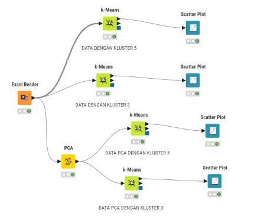
Fig. 11 Gambar 4.0: Workflow Clustering K-Means & Reduksi Dimensi PCA pada KNIME Analytics Platform#
Hasil pengelompokan dari alur KNIME disajikan dalam bentuk grafik Scatter Plot KNIME yang memetakan sebaran 19 mahasiswa/daerah terhadap label cluster masing-masing:
{kind=link}
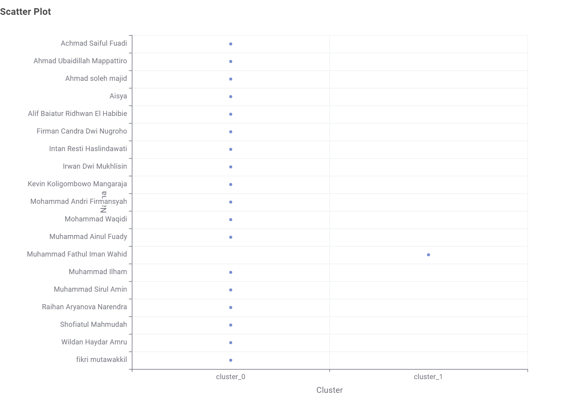
Fig. 12 Gambar 4.1: KNIME Scatter Plot K-Means (k=2) Dengan Reduksi Dimensi PCA (19 Komponen)#
Penjelasan Gambar 4.1 (K-Means \(k=2\) dengan PCA):
Pada skenario \(k=2\) menggunakan reduksi dimensi PCA 19 komponen (PCA 0 s.d. PCA 18), mayoritas 18 mahasiswa/daerah dikelompokkan ke dalam cluster_0. Hanya 1 mahasiswa, yaitu Muhammad Fathul Iman Wahid (Burneh, Bangkalan), yang terpisah secara ekstrem ke dalam cluster_1 sebagai pencilan (outlier).
{kind=link}
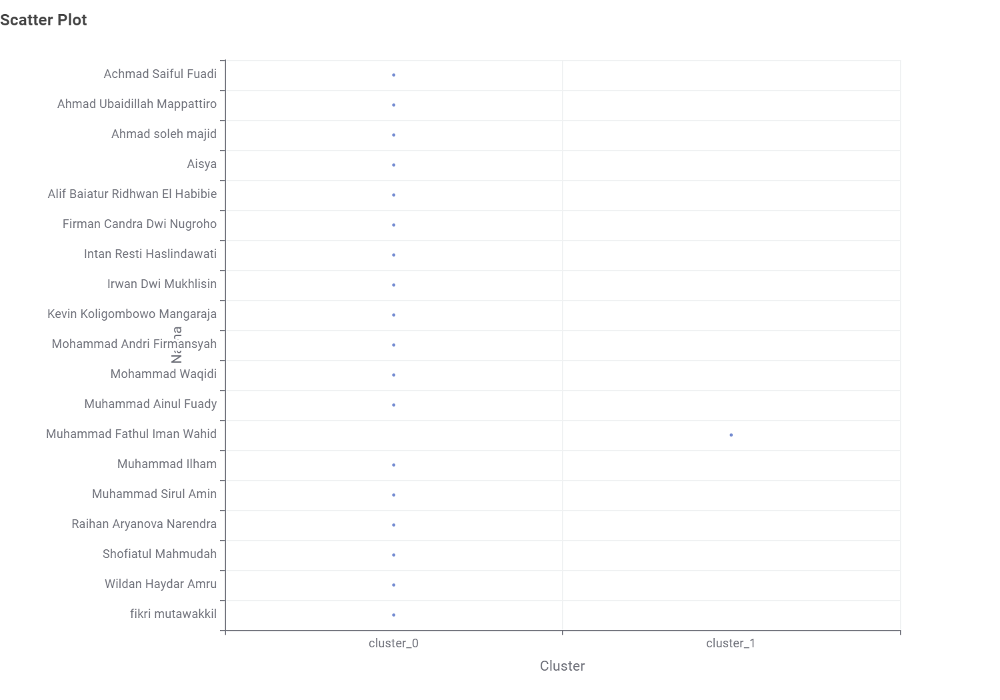
Fig. 13 Gambar 4.2: KNIME Scatter Plot K-Means (k=2) Tanpa PCA (272 Fitur TSFEL Utuh)#
Penjelasan Gambar 4.2 (K-Means \(k=2\) tanpa PCA):
Pada skenario \(k=2\) menggunakan 272 fitur TSFEL utuh ter-normalisasi tanpa PCA, hasil pengelompokan menunjukkan konsistensi 100% di mana 18 mahasiswa berada di cluster_0 dan Muhammad Fathul Iman Wahid (Burneh, Bangkalan) tetap menjadi outlier tunggal di cluster_1.
{kind=link}
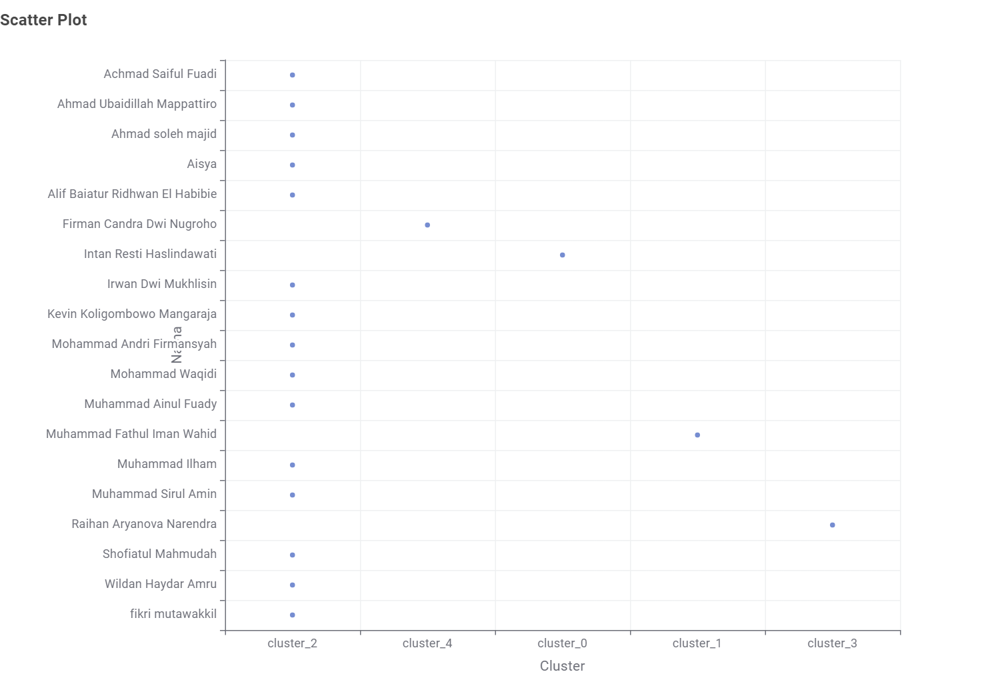
Fig. 14 Gambar 4.3: KNIME Scatter Plot K-Means (k=5) Dengan Reduksi Dimensi PCA#
Penjelasan Gambar 4.3 (K-Means \(k=5\) dengan PCA): Ketika jumlah cluster ditingkatkan menjadi \(k=5\) dengan PCA, kelompok mayoritas terurai secara granular menjadi 5 kelompok:
cluster_2: Kelompok utama terbanyak (14 mahasiswa/daerah).cluster_4: Firman Candra Dwi Nugroho (Kraton, Bangkalan).cluster_0: Intan Resti Haslindawati (Kadur, Pamekasan).cluster_1: Muhammad Fathul Iman Wahid (Burneh, Bangkalan).cluster_3: Raihan Aryanova Narendra (Sokobanah).
{kind=link}
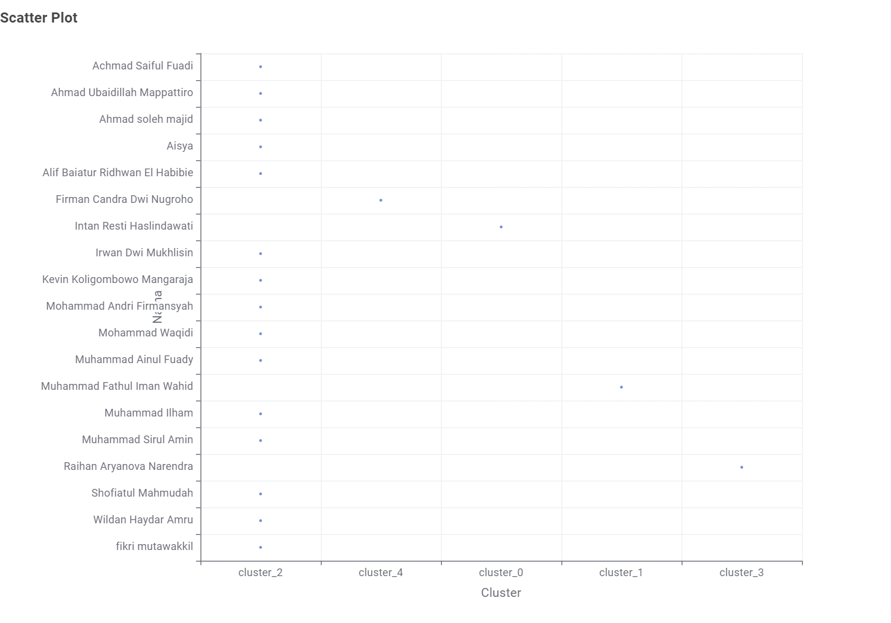
Fig. 15 Gambar 4.4: KNIME Scatter Plot K-Means (k=5) Tanpa PCA (272 Fitur TSFEL Utuh)#
Penjelasan Gambar 4.4 (K-Means \(k=5\) tanpa PCA): Pengelompokan \(k=5\) menggunakan 272 fitur TSFEL utuh tanpa PCA menghasilkan pemetaan yang serupa dengan variasi label cluster yang selaras, menguraikan 19 mahasiswa menjadi 1 kelompok utama dan 4 cluster pencilan spesifik.
4.2 Kesimpulan Perbandingan (=2\( vs =5\)) & Pengaruh Reduksi Dimensi PCA (19 Komponen)#
Berdasarkan hasil pemodelan K-Means dan analisis visual Scatter Plot:
Efektivitas Skenario \(k=2\):
Skenario \(k=2\) berhasil mengisolasi anomali pencilan utama secara biner: 18 mahasiswa/daerah berada di kelompok mayoritas (
cluster_0), sedangkan Muhammad Fathul Iman Wahid (Burneh, Bangkalan) terisolasi secara eksplisit dicluster_1.
Dinamika Skenario \(k=5\):
Peningkatan nilai \(k\) dari 2 menjadi 5 menguraikan kelompok mayoritas menjadi segmentasi yang lebih kaya:
1 kelompok mayoritas (14 mahasiswa).
4 cluster pencilan spesifik beranggotakan 1 mahasiswa: Firman Candra Dwi Nugroho, Intan Resti Haslindawati, Muhammad Fathul Iman Wahid, dan Raihan Aryanova Narendra.
Peran Reduksi Dimensi PCA:
PCA (19 komponen utama: PCA 0 s.d. PCA 18) mampu menyerap 100% rasio varians dari 272 fitur TSFEL tanpa kehilangan informasi spasial maupun temporal, menghasilkan struktur cluster yang 100% selaras antara pemodelan dengan PCA dan tanpa PCA.